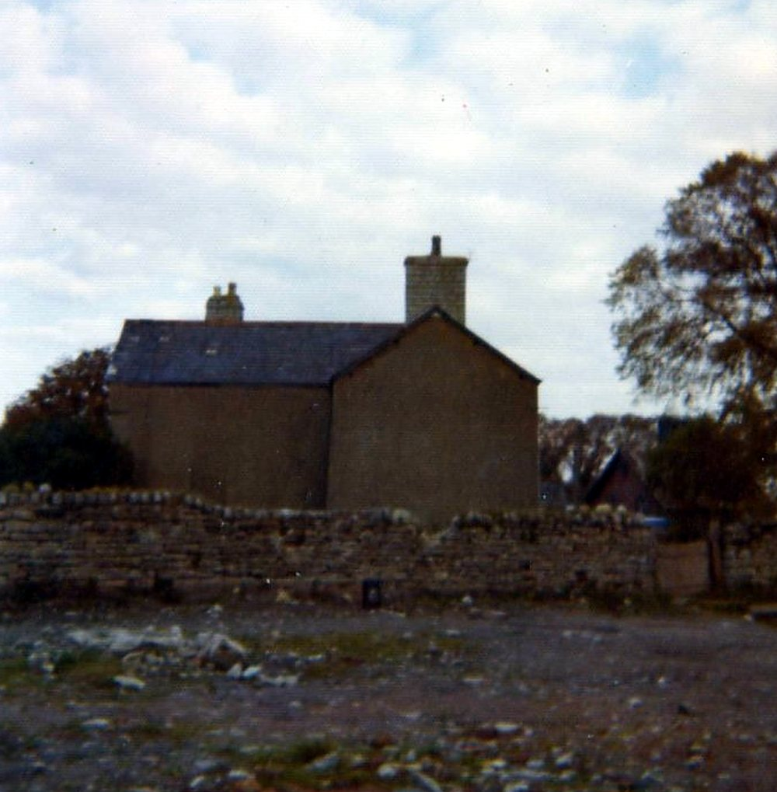

5–9 December 1988: the demolition
The last injunction application was dismissed on Monday 5 December 1988. Before breakfast on Tuesday 6 December the farmhouse and its buildings had been demolished.
6 December 1988 — The last injunction hearing
- Record:
EV-0105 (Legal Wiki, Evidence Register)
“… a judge at Cardiff Crown Court dismissed an application by Mr and Mrs Buckler for an injunction to restrain BP Properties Ltd, the owners of the land, from destroying or damaging the fabric of the building.”
What the record shows. The Western Mail reported that, after a hearing in chambers, a judge dismissed Mr and Mrs Buckler’s application for an injunction to stop BP Properties Ltd from destroying or damaging the building.
What it does not show. A journalist’s summary, not the judgment. Another report names a different court.
6 December 1988 — “That fight came to an end yesterday afternoon”
- Record:
EV-0104 (Legal Wiki, Evidence Register)
“Her husband’s family have been battling for more than 30 years to prove they owned the historic farmhouse at Llandough. That fight came to an end yesterday afternoon in the High Court in Cardiff …”
What the record shows. The South Wales Echo reported that the family’s fight over the farmhouse had ended in the High Court in Cardiff, and that the owners acted within hours.
What it does not show. A snippet without headline or byline.
c. 7 December 1988 — “Tears flow as 800 year-old farm house is razed at last”
- Record:
EV-0106 (Legal Wiki, Evidence Register)
“The twenty-strong team moved in with bulldozers just after 4am and by breakfast time there was not a building left standing on the ten-acre site which overlooks Cardiff Bay.”
What the record shows. A press cutting reported that a team of about twenty moved in with bulldozers just after 4 am and that by breakfast no building was left standing on the site. It printed the words of the farmer’s wife on the family’s loss.
What it does not show. The newspaper and date are not printed on the cutting. The age it gives the house is the paper’s figure.
7 December 1988 — A councillor calls the demolition “disgusting”
- Record:
EV-0107 (Legal Wiki, Evidence Register)
“a Vale of Glamorgan councillor and BP pensioner said the decision by BP Properties to flatten the buildings was ‘disgusting’.”
What the record shows. The South Wales Echo reported that a Vale of Glamorgan councillor, himself a BP pensioner, called the decision to flatten the buildings “disgusting” and planned to write in protest.
What it does not show. The councillor is not named in the extract.
9 December 1988 — Villagers meet their councillors
- Record:
EV-0108 (Legal Wiki, Evidence Register)
“A small group of Llan-dough villagers met local councillors last night to express their anger …”
What the record shows. The South Wales Echo reported that a small group of Llandough villagers met local councillors to express their anger at the way the farmhouse had been demolished.
What it does not show. The extract does not give names or any decision taken at the meeting.


The farmhouse standing alone, from the farm’s own album (Part 1, no. 073). Source: Wayback Vault, album image.